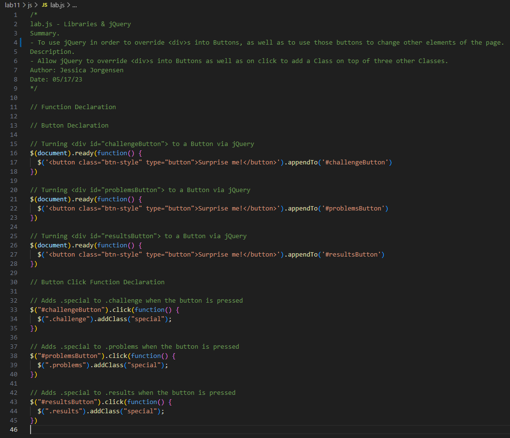
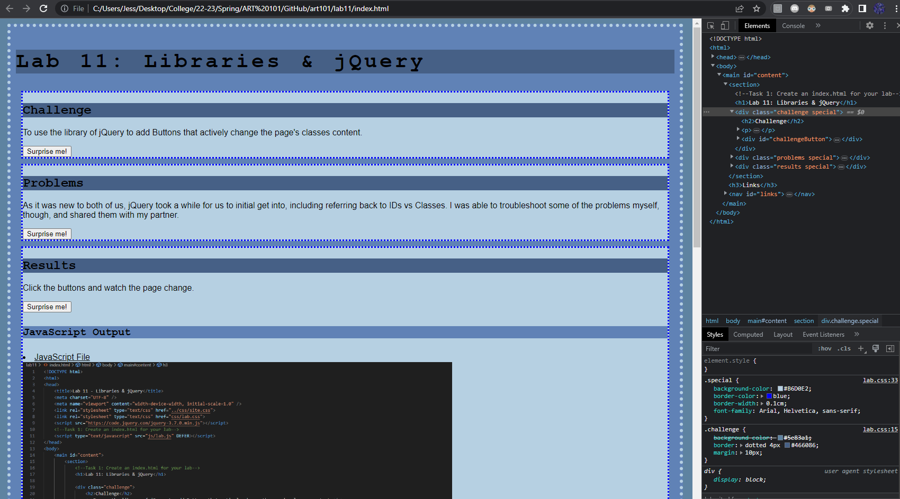
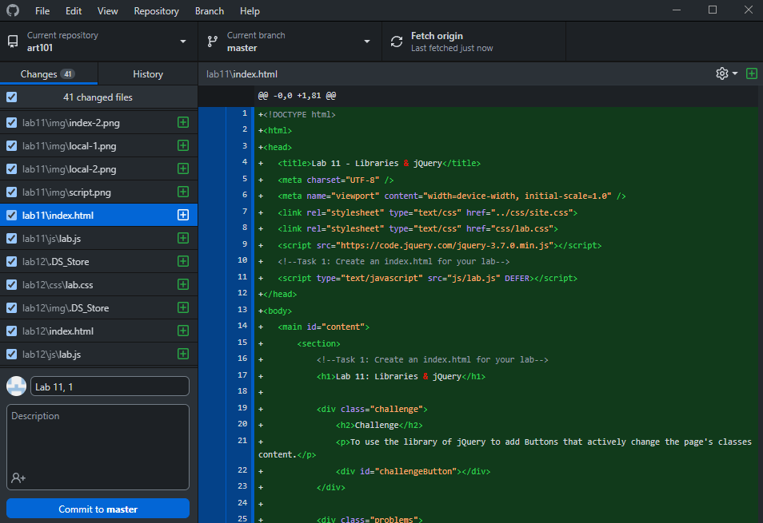

Lab 11: Libraries & jQuery
Challenge
To use the library of jQuery to add Buttons that actively change the page's classes content.
Problems
As it was new to both of us, jQuery took a while for us to initial get into, including referring back to IDs vs Classes. I was able to troubleshoot some of the problems myself, though, and shared them with my partner.
Results
Click the buttons and watch the page change.
JavaScript Output
The index.html of Lab 11. Unlike in previous labs, this one requires the use of multiple class changes, so each section is broken up into three seperate boxes.
What is displayed when the JavaScript file is brought up. It assigns the divs as buttons using jQuery, then uses on-click effects to add a class to a portion of the page.
The CSS for the lab. It is noticably different than previous iterations because of the need for seperate sections, as well as a seperate class that is to be superimposed onto them when one of the three buttons are pressed.
Lab 11's local page. Each section features changed CSS elements from one another. When the buttons are pressed, a new class is added to them, therefore overriding their CSS as a result. All three of them are now the same.
GitHub's showcase at the to-be uploaded file changes, images, and code.

The live page of Lab 11, which works as intended.